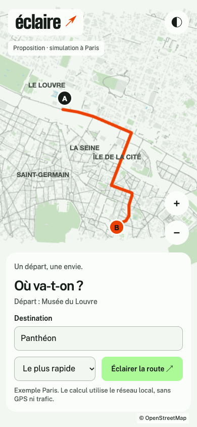
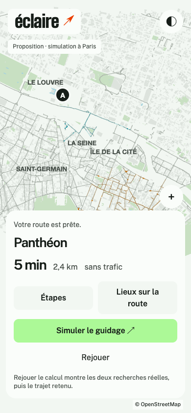
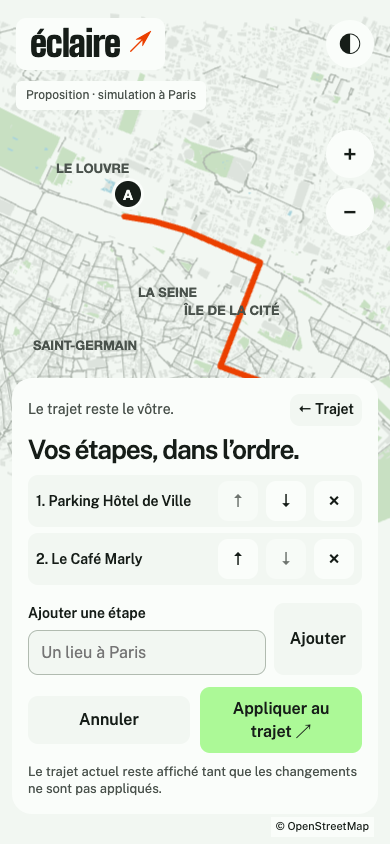
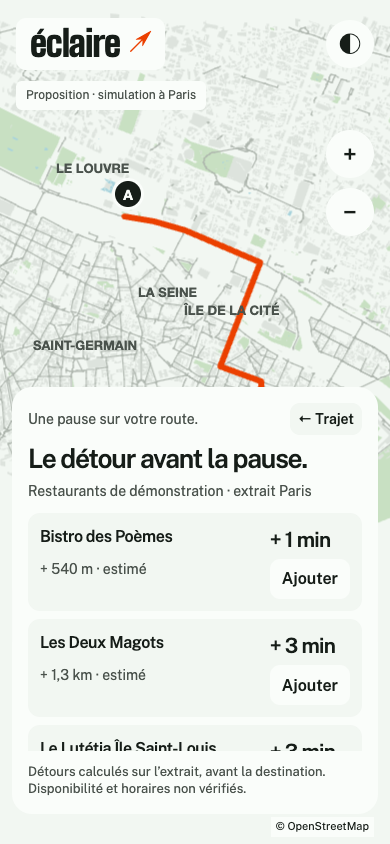
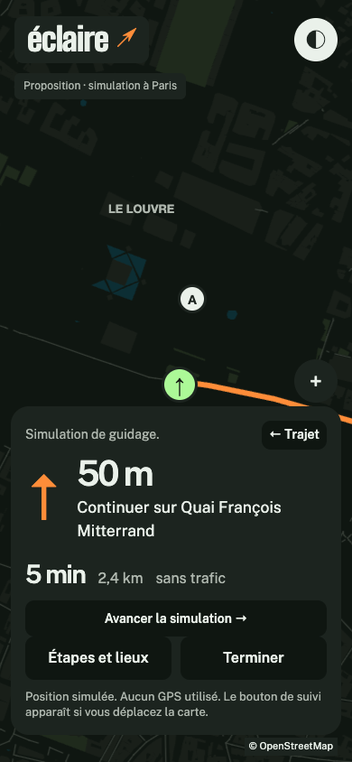

Préparer.
Une destination, un départ et une action claire. Le résultat ouvre le trajet sans masquer toute la carte.


Deux recherches éclairent les routes. Éclaire montre leur rencontre, puis le trajet retenu.
Essayer la proposition ↗Tapez un lieu de l’extrait Paris. Deux recherches éclairent les routes, puis le trajet se dessine.
Départ du Louvre. Vrai calcul local à Paris, sans GPS ni trafic. Le guidage se simule au clic.
La carte reste le point de repère. Les commandes suivent ce que vous êtes en train de faire.
Une destination, un départ et une action claire. Le résultat ouvre le trajet sans masquer toute la carte.

Ajouter, retirer, remettre dans l’ordre. Les étapes se modifient dans le même espace ; le trajet attend la validation.

Voir le temps de détour avant d’ajouter un lieu. Une information utile à la décision, avec la mention d’estimation.

Une instruction dominante et une arrivée toujours visible. La nuit, la carte s’assombrit ; les commandes gardent leur place.

Aucun choix ne correspond à ce mot.
Un fond calme et un trajet orange. La menthe est réservée à l’action principale ; les deux couleurs du calcul gardent leur rôle d’explication.
La palette de nuit est manuelle dans cette proposition.
Lire les intentions et les limites ↗L’alpha.12 contient les nouvelles étapes et les lieux sur le parcours. Cette nouvelle direction graphique reste une proposition à explorer.